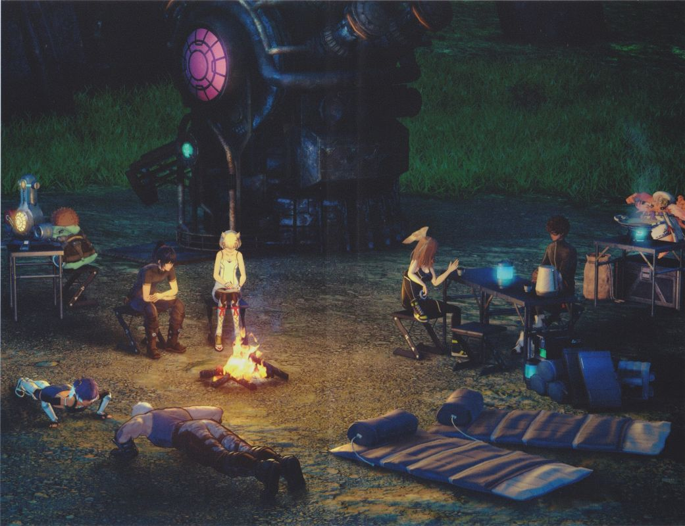

Description
Xenoblade Chronicles 3 is a single-player, open-world Japanese Action Role-Playing Game for the Nintendo Switch systems.
Publishing Info
- Publisher: Nintendo
- Developer: Monolith Software, Inc.
- ESRB Rating: Teen
- Controller supports: Nintendo Switch Pro-controller, Joy-cons.
Game Categories
- Genre: Role Playing (RPG)
- Perspective: 3rd-Person (1st-person optional)
- Art: Anime-style
- Pacing: Real-time
- Setting: Futuristic Fantasy
Review
"Taken by itself, Xenoblade Chronicles 3 is a spectacular example of an epic JRPG. Yes, the combat system is a little too overcooked for its own good, but the developer holds your hand nicely so that by the 40th hour the explosion of numbers, flashy attacks, and intertwined systems somehow makes sense. Aside from that, though, it's a game that, for its size, is one of elegance and maturity. And that's when you take it by itself. Philosophical, humorous, emotional, dramatic and always entertaining, Xenoblade Chronicles 3 is going to be better remembered not for being its own entity, but rather like the third chapter in any great trilogy; as the perfect escalation of over a decade of storytelling to an enormously satisfying and appropriately epic conclusion." - Digitally Downloaded